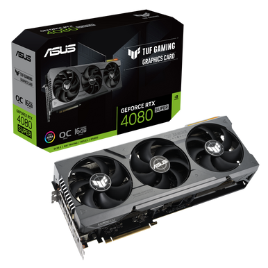
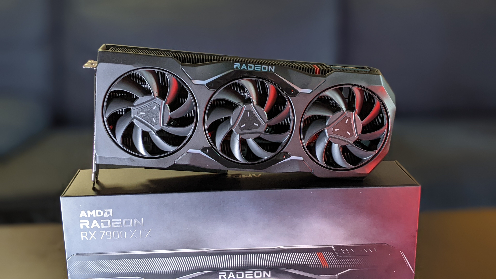
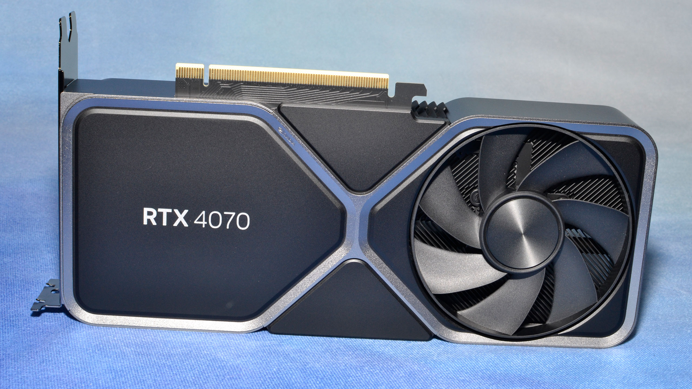
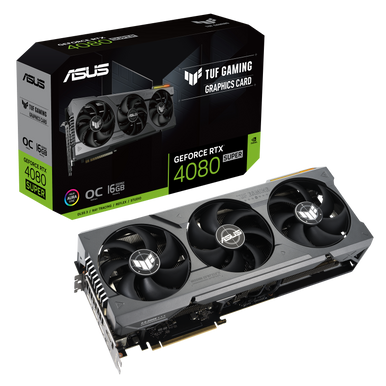
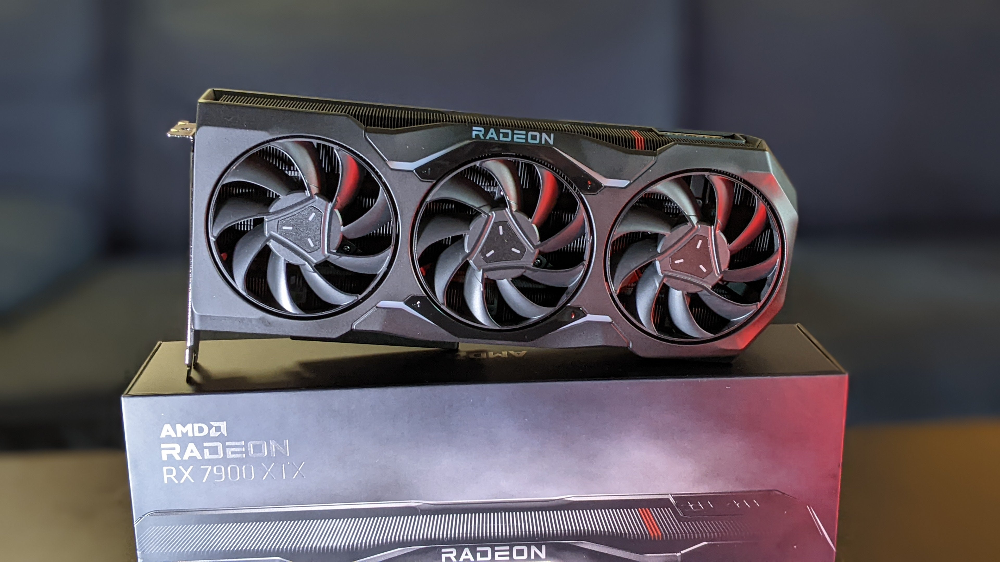
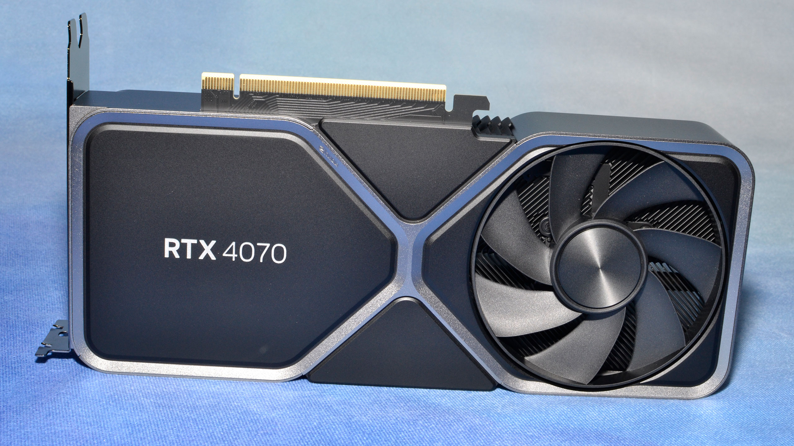
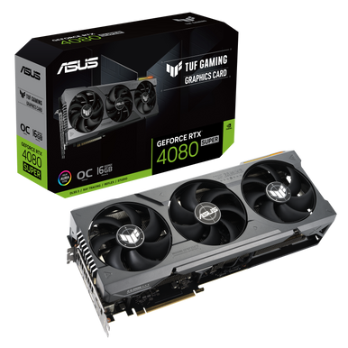
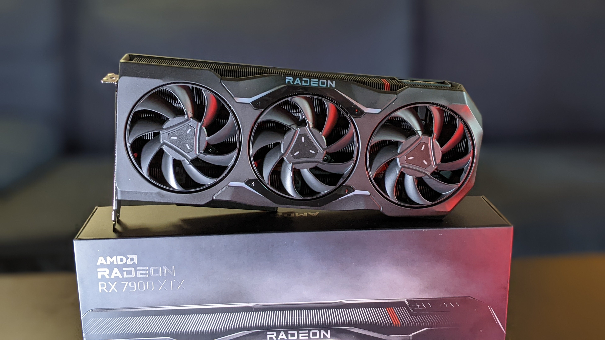
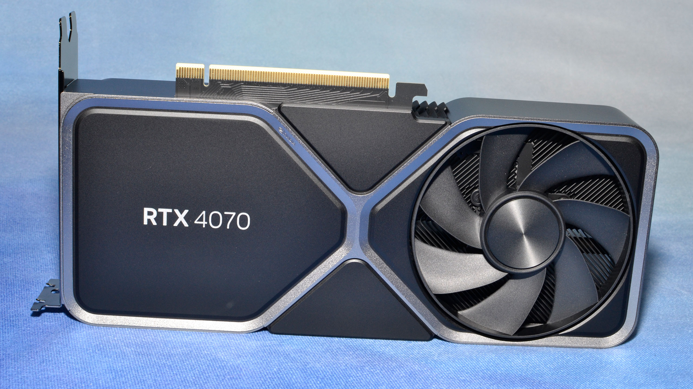

GPU Image Comparisons
 





Compare top GPUs side-by-side to make the best purchasing decision.
RTX 4090 vs. RTX 4080: If budget isn't an issue, the RTX 4090 is superior for rendering and AI tasks, but the 4080 offers better value for 4K gaming.
RTX 4070 vs. RX 7800 XT: The 4070 is more power-efficient, while the 7800 XT offers more VRAM and a lower price.
| GPU Model | Specs | Pros |
|---|---|---|
| RTX 4090 | 24GB GDDR6X, Ray Tracing, DLSS 3 | Best for high-end gaming & rendering |
| RTX 4080 | 16GB GDDR6X, Ray Tracing | Great value for 4K gaming |
| RX 7900 XTX | 24GB GDDR6, AMD FidelityFX | Excellent price-to-performance ratio |
| RX 7800 XT | 16GB GDDR6, AMD FidelityFX | Affordable for 1440p gaming |


